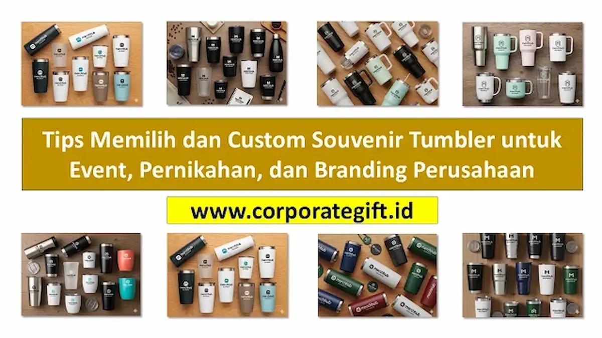

Corporate Gifts ID - Cara memilih dan custom souvenir tumbler yang tepat adalah dengan menyesuaikan material dasar, kapasitas volume, dan estetika desain sesuai tema acara serta profil audiens penerima, lalu memadukannya dengan teknik cetak logo presisi, grafir laser nama, atau pesan korporat inspiratif agar cinderamata terasa personal, bernilai guna tinggi, dan membekas di ingatan.
Di tengah tingginya kesadaran masyarakat terhadap gaya hidup sehat dan keberlanjutan lingkungan, souvenir tumbler kini telah bertransformasi dari sekadar botol minum fungsional harian menjadi media branding dan promosi korporat paling strategis. Menguasai tips custom souvenir tumbler akan membantu tim procurement dan event organizer merancang hadiah bisnis yang berdampak maksimal tanpa melebihi pagu anggaran.
Poin Kunci Pemilihan Souvenir Tumbler:
- Segmentasi Penerima: Sesuaikan model tumbler (sporty, smart LED suhu, atau mug kantor) dengan target audiens dan jenis acara.
- Material Food Grade: Utamakan material stainless steel 304 food grade anti karat atau botol plastik Tritan BPA-free demi keamanan konsumsi.
- Teknologi Custom: Manfaatkan grafir fiber laser untuk tampilan mewah permanen atau UV print rotary untuk logo multi-warna yang detail.
- Daya Guna Tinggi: Tumbler yang awet digunakan berulang kali di meja kerja kantor, menciptakan paparan brand berulang (continuous exposure).
- Mitra Pengadaan B2B: Konsultasikan kebutuhan produksi massal Anda bersama vendor resmi seperti CorporateGifts.ID untuk jaminan sampel fisik dan kualitas cetak teruji.
Kenapa Souvenir Tumbler Sangat Populer dan Diminati?
Popularitas tumbler sebagai cinderamata instansi dan merchandise promosi bukan tanpa alasan. Berbeda dengan barang promosi sekali pakai seperti brosur atau kalender tahunan, tumbler memiliki siklus hidup produk yang sangat panjang dan relevan dengan rutinitas harian setiap individu.
Ketika seorang karyawan atau klien bisnis membawa botol minum berlogo perusahaan Anda ke gym, ruang meeting, kafe, atau saat perjalanan dinas, mereka secara tidak langsung bertindak sebagai duta merek (brand ambassador) yang memperluas jangkauan visibilitas bisnis secara organik.
5 Tips Utama Memilih Souvenir Tumbler yang Tepat
Agar pengadaan merchandise kantor Anda membuahkan hasil optimal dan tidak berakhir sia-sia di laci penyimpanan, berikut 5 langkah praktis yang wajib diperhatikan:
-
Sesuaikan dengan Konsep dan Formalitas Acara:
Format acara menentukan tipe drinkware yang ideal. Seminar korporat eksekutif dan gala dinner menuntut tumbler berinsulasi vakum dengan balutan warna monokrom mewah. Sementara itu, kegiatan outing kantor atau fun walk lebih serasi dengan tumbler plastik ergonomis berkapasitas besar. -
Kenali Karakteristik dan Gaya Hidup Audiens:
Karyawan muda dan pegiat startup cenderung menyukai tumbler minimalis bergaya estetik Korea atau tumbler kopi travel mug. Sebaliknya, segmen direksi dan investor VIP lebih mengapresiasi tumbler smart temperature LED dengan lapisan kulit sintetis. -
Uji Kualitas Material dan Ketahanan Fisik:
Pastikan produk telah tersertifikasi food-grade, memiliki tutup karet silikon anti bocor (leak-proof), serta lapisan cat tahan gores (powder coating) yang tidak mudah mengelupas saat dicuci berulang kali. -
Alokasikan Anggaran (RAB) Secara Proporsional:
Tentukan batas harga per unit tanpa mengorbankan kualitas material. Pemesanan dalam jumlah massal biasanya memberikan efisiensi biaya produksi per unit (skala ekonomis) yang jauh lebih hemat. -
Pilih Vendor Spesialis Berlegalitas Resmi:
Bekerjasamalah dengan vendor suvenir B2B yang memiliki fasilitas mesin cetak in-house, sistem kontrol kualitas ketat, dan transparansi administrasi seperti faktur pajak e-Faktur.
Karakteristik Pilihan Material Souvenir Tumbler
Material dasar tumbler menentukan fungsi termal, bobot, durabilitas, dan persepsi kemewahan hadiah. Berikut perbandingan karakteristik material tumbler yang paling sering digunakan dalam pengadaan korporat:
| Jenis Material Tumbler | Karakteristik & Fitur Utama | Rekomendasi Kebutuhan Acara |
|---|---|---|
| Stainless Steel 304 (Double Wall Vacuum) | Mampu menahan suhu panas dan dingin 8-12 jam, anti karat, sangat kokoh, dan berkesan eksklusif. | Corporate gift VIP, cinderamata direksi, hadiah anniversary perusahaan, dan merchandise bank. |
| Kaca Borosilikat Premium | Tampilan transparan jernih, higienis bebas residu bau, tahan perubahan suhu mendadak, dilengkapi pelindung silikon. | Souvenir pernikahan eksklusif, private luncheon, event kecantikan/lifestyle, dan gift set hampers. |
| Plastik Tritan (BPA-Free) | Bobot sangat ringan, tahan benturan (shatterproof), aman dari racun kimiawi, mudah dibawa bepergian. | Gathering karyawan outdoor, seminar edukasi kampus, event olahraga, dan suvenir komunitas. |
| Eco-Friendly (Bambu & Serat Gandum) | Bahan ramah lingkungan biodegradable, memiliki serat tekstur natural yang unik, mendukung pengurangan emisi karbon. | Program CSR lingkungan, kampanye sustainability (ESG), seminar green business, dan institusi pemerintahan. |

Pilihan material dan model tumbler custom untuk souvenir kantor, event pernikahan, dan merchandise instansi.
Ide Desain dan Teknik Customisasi Tumbler
Kekuatan souvenir tumbler terletak pada sentuhan personalisasi dan kerapian teknik aplikasinya. Beberapa opsi customisasi visual yang dapat Anda terapkan antara lain:
- Grafir Fiber Laser: Menghasilkan ukiran logo permanen berwarna silver atau metalik yang tidak akan luntur seumur hidup. Sangat cocok untuk tumbler stainless steel.
- UV Printing Rotary: Teknologi cetak digital 360 derajat yang mampu menampilkan warna-warna gradasi kompleks, logo multi-warna, dan efek timbul bertekstur (embossed).
- Personalisasi Nama Penerima: Menyematkan nama spesifik setiap tamu atau nama karyawan pada masing-masing bodi tumbler, memberikan rasa dihargai yang sangat mendalam.
- Tipografi & Quotes Inspiratif: Mengintegrasikan slogan perusahaan atau kutipan penyemangat kerja yang selaras dengan nilai-nilai korporat (core values).
- Kemasan Eksklusif: Membungkus tumbler dalam rigid hardbox custom magnetik atau sleeve pouch serut untuk menyempurnakan pengalaman unboxing.
Aplikasi Souvenir Tumbler untuk Berbagai Event
Souvenir tumbler memiliki fleksibilitas penerapan yang sangat luas untuk beragam konteks kegiatan:
Seminar & Workshop B2B
Disertakan ke dalam goodie bag seminar kit bersama buku agenda dan pulpen metal untuk menunjang kebutuhan peserta selama sesi pelatihan.
Souvenir Pernikahan Mewah
Menggunakan tumbler kaca borosilikat atau mini stainless mug berpita elegan dengan inisial emas mempelai sebagai wujud terima kasih kepada para undangan.
Family Gathering & Outbound
Tumbler sporty berkapasitas besar (750-1000 ml) yang praktis dibawa saat beraktivitas fisik di luar ruangan bersama seluruh keluarga besar karyawan.
Program CSR & Kampanye Hijau
Tumbler berbahan daur ulang yang dibagikan secara cuma-cuma guna mengampanyekan gerakan kurangi sampah plastik sekali pakai (zero waste lifestyle).
Memaksimalkan Branding Perusahaan Melalui Tumbler
Agar suvenir tumbler berfungsi maksimal sebagai aset public relations dan pemasaran, pastikan perancangan visualnya tetap mengedepankan prinsip elegan. Hindari menempatkan logo perusahaan secara berlebihan dengan ukuran yang terlalu mencolok di seluruh bodi tumbler.
Penempatan logo proporsional berukuran 3-4 cm di satu sisi, dipadukan dengan palet warna bodi tumbler yang sesuai dengan pedoman identitas visual korporat (brand guidelines), akan membuat penerima merasa percaya diri menggunakannya di tempat umum tanpa merasa seperti membawa media iklan berjalan.
Strategi Distribusi Souvenir Tumbler yang Efektif
Manajemen logistik saat penyerahan cinderamata juga sangat memengaruhi impresi akhir penerima:
- Penyerahan Saat Registrasi Awal: Memungkinkan peserta seminar langsung menggunakan tumbler di meja hidangan kopi/teh selama acara berlangsung.
- Pemberian Sebagai Hadiah Apresiasi: Menjadikan tumbler edisi khusus sebagai reward doorprize, kuis interaktif, atau penghargaan karyawan berprestasi.
- Pengecekan Kualitas Fisik (QC): Pastikan setiap tumbler telah melalui proses pembersihan debu sisa grafir dan pengujian penutup karet sebelum dimasukkan ke dalam boks hadiah.
Dengan perencanaan matang mulai dari kurasi bahan baku hingga eksekusi kustomisasi grafir, souvenir tumbler Anda akan menjadi media promosi yang berdaya tahan tinggi dan senantiasa dikenang oleh para stakeholder bisnis.
Pertanyaan Seputar Souvenir Tumbler (FAQ)

Ditulis oleh: Sholikhatun Nikmah
Creative Product Designer & Bespoke PackagingSpesialis desain produk promosi, kurasi drinkware fungsional, dan pengemasan cinderamata korporat bernilai estetika tinggi di CorporateGifts.ID.
Lihat Profil Lengkap & Panduan Lainnya